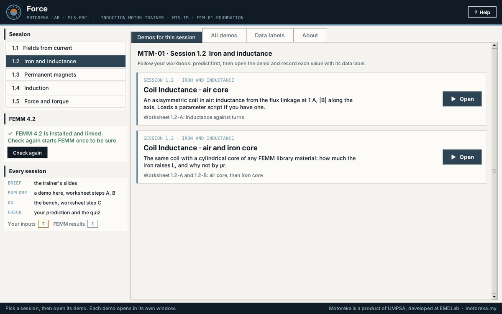
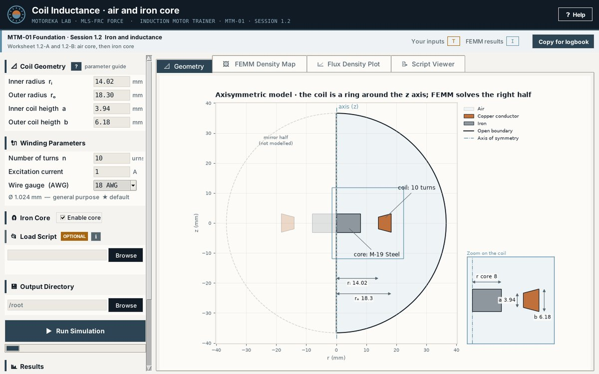
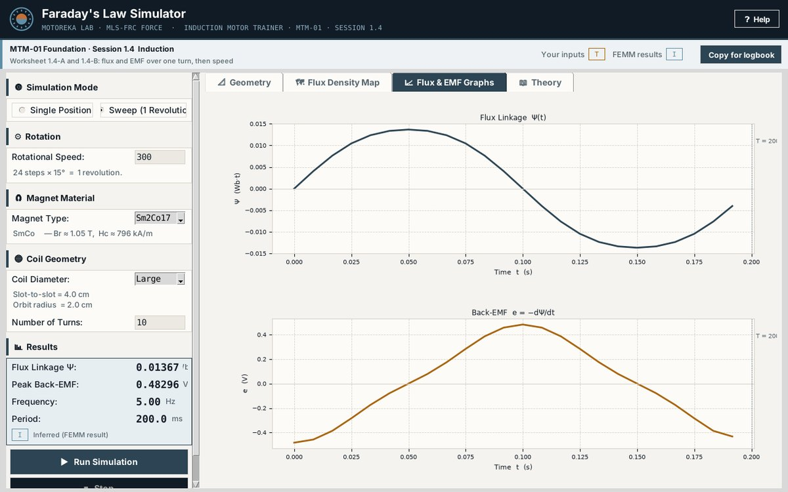

Force
Seven FEMM demos of electromagnetism in one Windows app: the field around a wire, a coil with and without iron, permanent magnets, Faraday's law, the force on a conductor and an electromagnet pulling its armature. Set the inputs, see the model, solve it in FEMM and read the results.
Version 1.0 · Windows 10 and 11 · 31 MB · Free to use and share

See the model, then solve it



Every result carries its data label: a FEMM result is Inferred, your inputs are Training targets. Copy for logbook copies the values with their labels.
From a wire to an electromagnet
Each demo is one session of MTM-01 Foundation, the first module of the Induction Motor Trainer. The workbook, the slides and the bench kit that go with them come with the trainer.
- 1.1Ampère Wire DemoThe field around a straight wire carrying DC: |B| against distance, FEMM against Ampère's law, inside and outside the conductor.
- 1.2Coil Inductance · air coreAn axisymmetric coil in air: inductance from the flux linkage at 1 A, |B| along the axis. Loads a parameter script if you have one.
- 1.2Coil Inductance · air and iron coreThe same coil with a cylindrical core of any FEMM library material: how much the iron raises L, and why not by μr.
- 1.3PM Flux SimulatorOne rectangular magnet, then two: the field map with field lines, |B| along the axis and B at the midpoint between the magnets.
- 1.4Faraday's Law SimulatorA coil turning between two magnet bands: flux linkage Ψ and EMF e = −dΨ/dt over one revolution, on a time axis.
- 1.5Lorentz Force & TorqueA one-turn coil between two magnet bands: the force on each conductor and the torque on the coil, at one angle or swept.
- 1.5Energy Method EI CoreAn EI electromagnet: the pull on the I-core and the inductance against the air gap; check F = ½ I² dL/dx.
Three steps, no Python
- Download and run Force_Setup.exeIf Windows says it protected your PC, choose More info, then Run anyway.
- Keep “Set up FEMM 4.2” tickedSetup fetches FEMM 4.2, free software by David Meeker, from femm.info, checks it, installs it and links it to Force. Windows asks once for administrator rights.
- Open ForceFrom the Start menu or the desktop. Pick a session and open its demo.
- Version
- 1.0
- Windows
- 10 and 11, 64-bit
- Download
- 31 MB
- Needs
- FEMM 4.2, set up for you
SHA-256 3eeb0ea3f0ad1196211bb870d880247eb875e77fe9a3b52e54b9f03098a48812
Free to use and share. Copyrighted.
Force (MLS-FRC) © 2026 Universiti Malaysia Pahang Al-Sultan Abdullah (UMPSA). All rights reserved. Motoreka is a product of UMPSA, developed at EMDLab.
You may install and use Force free of charge, for teaching, learning and your own study, and give unchanged copies of the installer to others free of charge. You may not sell Force, charge for copies of it, or pass on a changed copy. The full terms are shown during setup.
Force shows the results of 2D finite element models: they are model results, not measurements, and Force is provided as is, without warranty.
FEMM is not part of Force: Force uses an installed copy of FEMM 4.2, free software by David Meeker under the Aladdin Free Public License (femm.info). Force contains other free software under its own licences, listed in THIRD-PARTY.txt in its folder.
Force is one part of a module
Force is the app of MTM-01 Foundation. With the Induction Motor Trainer your trainees also get the workbook, the slides, the bench kit and the assessment, and they go on to build, wind and run a real induction motor.
Talk to the team at EMDLab
Tell us what you teach, build or need designed. We reply within one working day.